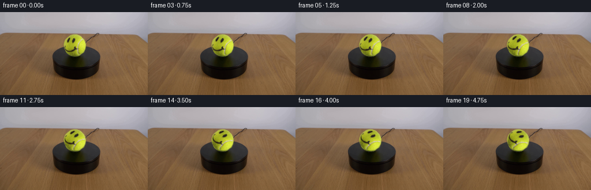
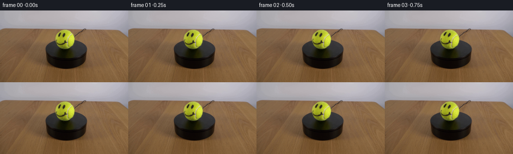

CODING AGENTS AS PIXEL WORLD MODELS
traex/DeepSeek-V4.1-Flash · 0167
点击播放 · 原生 RGB 像素
逐轮保存的候选
回放视频、检查图与代码变化。
每份候选均可单独播放。实际图片检查记录在下方工具轨迹中。
候选 01播放与检查图
点击播放 · 原生 RGB 像素


展开代码变化
--- 上一保存版本
+++ 本次保存版本
@@ -0,0 +1,83 @@
+from pathlib import Path
+
+import cv2
+import numpy as np
+from PIL import Image
+
+import artifact_io
+
+
+CASE_DIR = Path(__file__).resolve().parent
+FRAME_COUNT = 20
+FPS = 4
+
+# Fitted from the circular yellow-green boundary in first_frame.png.
+BALL_CENTER = (129.5, 57.0)
+BALL_RADIUS = 19.6
+ROTATION_DEGREES = 60.0
+
+
+def smoothstep(edge0: float, edge1: float, values: np.ndarray) -> np.ndarray:
+ t = np.clip((values - edge0) / (edge1 - edge0), 0.0, 1.0)
+ return t * t * (3.0 - 2.0 * t)
+
+
+def rotate_ball(source: np.ndarray, angle_degrees: float) -> np.ndarray:
+ """Rotate the ball surface clockwise while holding its outline in place."""
+ height, width = source.shape[:2]
+ yy, xx = np.mgrid[:height, :width].astype(np.float32)
+ cx, cy = BALL_CENTER
+ dx = xx - cx
+ dy = yy - cy
+ radius = np.hypot(dx, dy)
+
+ # Map destination samples back into the unrotated surface.
+ angle = np.deg2rad(angle_degrees)
+ cos_a = np.cos(angle)
+ sin_a = np.sin(angle)
+ source_x = (cx + dx * cos_a + dy * sin_a).astype(np.float32)
+ source_y = (cy - dx * sin_a + dy * cos_a).astype(np.float32)
+
+ rotated = cv2.remap(
+ source,
+ source_x,
+ source_y,
+ interpolation=cv2.INTER_CUBIC,
+ borderMode=cv2.BORDER_REFLECT_101,
+ )
+
+ # Preserve the original outer rim and its contact edge. The face occupies
+ # only the inner surface, so this also avoids any visible circular cut.
+ blend = 1.0 - smoothstep(17.1, 19.15, radius)
+ blend *= (radius < BALL_RADIUS).astype(np.float32)
+ blend = blend[..., None]
+
+ result = source.astype(np.float32) * (1.0 - blend)
+ result += rotated.astype(np.float32) * blend
+ return np.clip(np.rint(result), 0, 255).astype(np.uint8)
+
+
+def main() -> None:
+ first_frame = np.asarray(
+ Image.open(CASE_DIR / "first_frame.png").convert("RGB"),
+ dtype=np.uint8,
+ )
+ if first_frame.shape != (144, 256, 3):
+ raise ValueError(f"unexpected first-frame shape: {first_frame.shape}")
+
+ frames = np.empty((FRAME_COUNT, 144, 256, 3), dtype=np.uint8)
+ frames[0] = first_frame
+
+ duration = FRAME_COUNT / FPS
+ for index in range(1, FRAME_COUNT):
+ # The frame timestamp drives a constant angular velocity; frame 0 is
+ # kept byte-identical to the supplied image as required.
+ timestamp = index / FPS
+ angle = ROTATION_DEGREES * timestamp / duration
+ frames[index] = rotate_ball(first_frame, angle)
+
+ artifact_io.save(frames, CASE_DIR)
+
+
+if __name__ == "__main__":
+ main()
可观测工具轨迹
实际执行的命令与返回图片。
命令 1exit 0
/bin/bash -lc "pwd && rg --files -g 'prompt.txt' -g 'GENERATION_RULES.md' -g 'first_frame.png' -g '"'!*.mp4'"' -g '"'!*.webm'"'"
命令 2exit 0
/bin/bash -lc "sed -n '1,240p' prompt.txt"
命令 3exit 0
/bin/bash -lc "sed -n '1,280p' GENERATION_RULES.md"
命令 4exit 0
/bin/bash -lc "find . -maxdepth 3 -type f -printf '%p %s bytes\\n' | sort"
命令 5exit 0
/bin/bash -lc "python - <<'PY'
from PIL import Image
im=Image.open('first_frame.png')
print(im.mode, im.size)
print(im.getextrema())
print(im.getpixel((128,72)))
PY"命令 6exit 0
/bin/bash -lc "python - <<'PY'
mods=['numpy','PIL','cv2','scipy','imageio','matplotlib','skimage']
for m in mods:
try:
x=__import__(m); print(m, getattr(x,'__version__','ok'))
except Exception as e: print(m,'MISSING',e)
PY
which ffmpeg || true
python - <<'PY'
try:
import artifact_io, inspect
print('artifact_io', inspect.getfile(artifact_io))
print(inspect.getsource(artifact_io))
except Exception as e: print('artifact_io err',e)
PY"命令 7exit 0
/bin/bash -lc "python - <<'PY'
from PIL import Image
import numpy as np
im=np.asarray(Image.open('first_frame.png').convert('RGB'))
# ASCII luminance
g=(im@np.array([.299,.587,.114]))
chars=' .:-=+*#%@'
for y in range(0,144,4):
row=''
for x in range(0,256,2):
b=g[y:min(y+4,144),x:min(x+2,256)].mean()
row += chars[min(9,int(b/256*10))]
print(row)
PY"命令 8exit 0
/bin/bash -lc "python - <<'PY'
from PIL import Image
import numpy as np
from collections import Counter
im=np.asarray(Image.open('first_frame.png').convert('RGB'))
# quantized colors
q=(im//16)*16
c=Counter(map(tuple,q.reshape(-1,3)))
print('Top colors')
for k,v in c.most_common(30): print(k,v)
# bounding box of green/yellow ball candidates HSV
import cv2
hsv=cv2.cvtColor(im,cv2.COLOR_RGB2HSV)
for name,mask in [
('yellow',((hsv[:,:,0]>=20)&(hsv[:,:,0]<=45)&(hsv[:,:,1]>80)&(hsv[:,:,2]>80))),
('green',((hsv[:,:,0]>=35)&(hsv[:,:,0]<=95)&(hsv[:,:,1]>50)&(hsv[:,:,2]>50))),
('bright',(im.max(2)>170)),
('dark',(im.max(2)<25))]:
ys,xs=np.where(mask)
print(name,len(xs), 'bbox', (xs.min(),ys.min(),xs.max(),ys.max()) if len(xs) else None)
# row segments for bright yellow
mask=(hsv[:,:,0]>=20)&(hsv[:,:,0]<=45)&(hsv[:,:,1]>80)&(hsv[:,:,2]>80)
for y in range(144):
xs=np.flatnonzero(mask[y])
if len(xs)>2: print(y,xs.min(),xs.max(),len(xs))
PY"命令 9exit 0
/bin/bash -lc "python - <<'PY'
from PIL import Image
import numpy as np, cv2
im=np.asarray(Image.open('first_frame.png').convert('RGB')).astype(np.float32)
hsv=cv2.cvtColor(im.astype(np.uint8),cv2.COLOR_RGB2HSV).astype(float)
# Saturation and yellow/green hue
mask=(hsv[:,:,0]>=18)&(hsv[:,:,0]<=70)&(hsv[:,:,1]>=60)&(hsv[:,:,2]>=60)
# components
n,lab,stats,cent=cv2.connectedComponentsWithStats(mask.astype(np.uint8),8)
for i in range(1,n):
x,y,w,h,a=stats[i]
if a>10: print(i,'bbox',x,y,w,h,'area',a,'cent',cent[i])
# Circle fit using mask boundary within expected bbox
ys,xs=np.where(mask & (np.indices(mask.shape)[0]<85) & (np.indices(mask.shape)[0]>25) & (np.indices(mask.shape)[1]>95) & (np.indices(mask.shape)[1]<165))
# fit circle algebraic x"'^2+y''^2 + Ax+By+C=0
A=np.c_[xs,ys,np.ones(len(xs))]; b=-(xs*xs+ys*ys)
coef=np.linalg.lstsq(A,b,rcond=None)[0]
cx,cy=-coef[0]/2,-coef[1]/2
r=np.sqrt(cx*cx+cy*cy-coef[2])
print('"'circle fit all',cx,cy,r)
# print classes in crop
# classify yellow ball Y, dark D, white W, mid gray G, brown B
for y in range(30,85):
row=''
for x in range(100,161):
r,g,b=im[y,x]
mx=max(r,g,b); mn=min(r,g,b); sat=(mx-mn)/max(mx,1)
if sat>.25 and g>r*.75 and r>g*.55 and g>b*1.3: c='Y' if mx>150 else 'y'
elif mx<35: c='#'
elif mx<80: c='d'
elif sat>.2 and r>g>b: c='B'
elif mx<145: c='g'
elif mx<195: c='w'
else: c=' '
row+=c
print(f'{y:03d} {row}')
PY"命令 10exit 0
/bin/bash -lc "python - <<'PY'
from PIL import Image
import numpy as np, cv2
im=np.asarray(Image.open('first_frame.png').convert('RGB'))
# crop rows exact characters based luminance and chroma at every pixel, x 105..155
for y in range(35,80):
print(f'{y:03d}',end=' ')
for x in range(105,156):
r,g,b=map(int,im[y,x]); mx=max(r,g,b); mn=min(r,g,b)
if mx<30: c='@'
elif mx<65: c='#'
elif mx<100: c='O'
elif mx<130: c='o'
elif mx<160: c='.'
elif mx<190: c='-'
elif mx<220: c='+'
else: c=' '
# if yellow
if g>r*0.65 and r>b*1.6 and g>b*1.4: c=c.lower() if mx<180 else c.upper()
print(c,end='')
print()
print('crop values black/dark within radial r<22')
y0,x0=57,129
for y in range(37,78):
xs=[]
for x in range(108,151):
if (x-x0)**2+(y-y0)**2 < 22**2:
r,g,b=map(int,im[y,x])
if max(r,g,b)<80: xs.append((x,(r,g,b)))
if xs: print(y,xs)
PY"命令 11exit 0
/bin/bash -lc "python - <<'PY'
from PIL import Image
import numpy as np, cv2
im=np.asarray(Image.open('first_frame.png').convert('RGB')).astype(float)
# Extract exact apparent sphere/ball circular region. Fit dark foreground against bright background near top hemisphere.
# infer center via color mask centroid and horizontal/vertical extents. Ball appears radius ~20, with bottom contact/stand.
for cy in range(54,62):
for cx in range(126,134):
pass
# radial color summary relative center (130,57.5)
cx,cy=129.5,57.5
print('ring mean by radius')
Y,X=np.mgrid[:144,:256]
r=np.sqrt((X-cx)**2+(Y-cy)**2)
for rr in range(0,26):
m=(r>=rr)&(r<rr+1)&(X>95)&(X<170)&(Y>25)&(Y<90)
vals=im[m]
print(rr,len(vals),np.mean(vals,axis=0).round(1),np.median(vals,axis=0).round(1))
# estimate circle boundary from hue mask top arc row x extents: print left right for each y x 100-160 based high chroma and yellow
hsv=cv2.cvtColor(im.astype(np.uint8),cv2.COLOR_RGB2HSV)
m=(hsv[:,:,0]>18)&(hsv[:,:,0]<55)&(hsv[:,:,1]>70)&(hsv[:,:,2]>70)
for y in range(37,79):
xs=np.where(m[y,95:170])[0]+95
if len(xs): print(y,xs.min(),xs.max(), 'radius', (xs.max()-xs.min())/2)
PY"命令 12exit 0
/bin/bash -lc "python - <<'PY'
from PIL import Image
import numpy as np, cv2
im=np.asarray(Image.open('first_frame.png').convert('RGB'))
# Save enlarged nearest crop for textual numerical inspection and maybe use image in artifact? not necessary
Image.fromarray(im[32:84,104:156]).resize((520,520),Image.Resampling.NEAREST).save('.tmp/ball_crop.png')
# print HSV details with labels
hsv=cv2.cvtColor(im,cv2.COLOR_RGB2HSV)
for y in range(39,79):
print(f'{y:03d}',end=' ')
for x in range(108,152):
r,g,b=map(int,im[y,x]); h,s,v=map(int,hsv[y,x])
if v<65: c='#'
elif s>130 and 20<=h<=40: c='Y'
elif s>90 and 20<=h<=45: c='y'
elif s<35 and v>140: c='.'
elif s<50 and v>100: c=':'
elif r>g*1.2 and g>b*1.1: c='b'
elif v<120: c='o'
else: c=' '
print(c,end='')
print()
# ball mask based known radius/geometry; save mask
Y,X=np.mgrid[:144,:256]
mask=((X-129.5)**2+(Y-57.5)**2<=19.5**2)
print('mask area',mask.sum())
# circle border samples actual RGB around angles
for ang in range(0,360,15):
x=int(round(129.5+18*np.cos(np.radians(ang)))); y=int(round(57.5+18*np.sin(np.radians(ang))))
print(ang,(x,y),im[y,x].tolist())
PY"命令 13exit 0
/bin/bash -lc "python - <<'PY'
from PIL import Image
import numpy as np, cv2
im=np.asarray(Image.open('first_frame.png').convert('RGB')).astype(np.float32)
Y,X=np.mgrid[:144,:256]
# sphere mask likely r <=19.6 centered 129.5,57.5. Need remove ball from base while preserving background.
mask=((X-129.5)**2+(Y-57.5)**2<=20.0**2)
# report around borders and where mask overlaps stand
for y in range(36,80,2):
xs=np.where(mask[y])[0]
if len(xs): print(y,xs.min(),xs.max())
# Build inpaint source. Since behind is mostly uniform bright upper background and dark pedestal lower:
# Estimate local background using directional horizontal interpolation excluding circle plus vertical.
base=im.copy().astype(np.uint8)
cv2.inpaint(base, mask.astype(np.uint8)*255, 9, cv2.INPAINT_TELEA).astype(np.float32)
# save inpaint inspection
Image.fromarray(cv2.inpaint(base, mask.astype(np.uint8)*255, 9, cv2.INPAINT_TELEA)).save('.tmp/inpaint.png')
# face component colors and approximate coordinates. sample dark pixels within ball
ys,xs=np.where(mask)
vals=im[ys,xs]
print('ball pixels mean median',vals.mean(0),np.median(vals,0))
# list coordinates dark relative center
pts=[]
for y,x in zip(ys,xs):
if im[y,x].max()<80:
pts.append((x-129.5,y-57.5,im[y,x].tolist()))
print('dark n',len(pts))
# summarize dark clusters using connected comps of dark mask within ball
dark=(im.max(2)<85)&mask
n,lab,stats,cent=cv2.connectedComponentsWithStats(dark.astype(np.uint8),8)
for i in range(1,n):
x,y,w,h,a=stats[i]
if a>=2: print(i,x,y,w,h,a,cent[i])
PY"命令 14exit 0
/bin/bash -lc "python - <<'PY'
from PIL import Image
import numpy as np, cv2
im=np.asarray(Image.open('first_frame.png').convert('RGB'))
for y in range(43,72):
print(f'{y:03d}',end=' ')
for x in range(108,152):
r,g,b=map(int,im[y,x])
mx=max(r,g,b)
if mx<40: c='@'
elif mx<65: c='#'
elif mx<90: c='O'
elif mx<115: c='o'
elif mx<140: c='d'
elif mx<165: c='s'
elif mx<190: c='l'
elif mx<215: c='-'
elif mx<235: c='+'
else: c=' '
print(c,end='')
print()
print('\\ncoordinates around inner dark details, RGB')
for y in list(range(45,53))+list(range(59,69)):
vals=[]
for x in range(112,148):
r,g,b=map(int,im[y,x])
if max(r,g,b)<95: vals.append(f'{x}:{r},{g},{b}')
if vals: print(y,' '.join(vals))
PY"命令 15exit 0
/bin/bash -lc 'ls -la'
命令 16exit 0
/bin/bash -lc "python - <<'PY'
from PIL import Image
import numpy as np
im=np.asarray(Image.open('first_frame.png').convert('RGB'))
print('shape',im.shape,'dtype',im.dtype,'size',im.nbytes)
print('exact first sha256 follows via hashlib')
import hashlib
print(hashlib.sha256(open('first_frame.png','rb').read()).hexdigest())
PY"命令 17exit 0
/bin/bash -lc "python - <<'PY'
from PIL import Image
import numpy as np
im=np.asarray(Image.open('first_frame.png').convert('RGB')).astype(float)
Y,X=np.mgrid[:144,:256]; cx,cy=129.5,57.5
r=np.sqrt((X-cx)**2+(Y-cy)**2); theta=np.arctan2(Y-cy,X-cx)
g=im@np.array([.299,.587,.114])
# radial/angular low baseline: median in ring, and maybe local 2d smooth via gaussian
import cv2
base=cv2.GaussianBlur(g,(0,0),5)
ratio=g/(base+1)
for y in range(40,76):
print(f'{y:03d}',end=' ')
for x in range(111,149):
if r[y,x]<18.8:
v=ratio[y,x]
if v<.50:c='@'
elif v<.65:c='#'
elif v<.78:c='O'
elif v<.88:c='o'
elif v<.95:c='.'
elif v>1.08:c='+'
elif v>1.02:c='-'
else:c=' '
else:c=' '
print(c,end='')
print()
print('coords low ratios r<18')
for y in range(40,76):
vals=[]
for x in range(111,149):
if r[y,x]<18 and ratio[y,x]<.7:
vals.append((x,round(ratio[y,x],2)))
if vals: print(y, vals)
PY"命令 18exit 1
/bin/bash -lc 'python generate.py'
命令 19exit 0
/bin/bash -lc 'python generate.py'
命令 20exit 0
/bin/bash -lc "find . -maxdepth 2 -type f -printf '%p %s\\n' | sort"
命令 21exit 0
/bin/bash -lc "python - <<'PY'
import numpy as np, hashlib, json
from PIL import Image
from pathlib import Path
first=np.asarray(Image.open('first_frame.png').convert('RGB'))
frames=np.stack([np.asarray(Image.open(f'frames/{i:02d}.png').convert('RGB')) for i in range(20)])
print('shape/dtype',frames.shape,frames.dtype)
print('frame0 identical:',np.array_equal(frames[0],first))
print('frame0 sha256',hashlib.sha256(frames[0].tobytes()).hexdigest())
print('all finite, range',frames.min(),frames.max())
print('changed pixels per frame vs 0:',[int(np.any(frames[i]"'!=first,axis=2).sum()) for i in range(20)])
print('"'adjacent changed pixel counts:',[int(np.any(frames[i]"'!=frames[i-1],axis=2).sum()) for i in range(1,20)])
print('"'mean abs adjacent differences:',[round(float(np.abs(frames[i].astype(float)-frames[i-1]).mean()),4) for i in range(1,20)])
# Pixel diff bounding boxes and seam checks
for i in [1,5,10,15,19]:
d=np.any(frames[i]"'!=first,axis=2); ys,xs=np.where(d)
print('"'diff',i,(xs.min(),ys.min(),xs.max(),ys.max()))
print('inspection exists',Path('inspection.png').exists(), 'pixels.npz',Path('pixels.npz').exists(), 'index',Path('index.html').exists())
PY"命令 22exit 0
/bin/bash -lc "python - <<'PY'
from PIL import Image
import numpy as np
for i in [0,4,9,14,19]:
im=np.asarray(Image.open(f'frames/{i:02d}.png').convert('RGB'))
print('\\nFRAME',i)
for y in range(42,72,2):
print(f'{y:03d}',end=' ')
for x in range(112,148):
r,g,b=map(int,im[y,x]); mx=max(r,g,b)
if mx<40:c='@'
elif mx<65:c='#'
elif mx<90:c='O'
elif mx<115:c='o'
elif mx<140:c='d'
elif mx<165:c='s'
elif mx<190:c='l'
elif mx<215:c='-'
elif mx<235:c='+'
else:c=' '
print(c,end='')
print()
PY"命令 23exit 0
/bin/bash -lc "python - <<'PY'
import numpy as np
from PIL import Image
im=np.asarray(Image.open('frames/19.png').convert('RGB')).astype(np.float32)
first=np.asarray(Image.open('first_frame.png').convert('RGB')).astype(np.float32)
# edge seam ring metrics: radial bins difference from base outside and at boundary
Y,X=np.mgrid[:144,:256]; r=np.hypot(X-129.5,Y-57.0)
for lo,hi in [(0,10),(10,15),(15,16.5),(16.5,17.5),(17.5,18.5),(18.5,19.3),(19.3,20),(20,21),(21,23),(23,26)]:
m=(r>=lo)&(r<hi)
print(lo,hi,'mean abs',np.abs(im-first)[m].mean(),'max',np.abs(im-first)[m].max())
# final JPEG/PNG checksum and alpha? no
PY"命令 24exit 0
/bin/bash -lc "python - <<'PY'
from pathlib import Path
import numpy as np, hashlib
from PIL import Image
# Contract validation
p=Path('pixels.npz')
z=np.load(p)
print('npz keys',z.files)
pix=z['pixels']
print('packed shape/dtype',pix.shape,pix.dtype)
# decode
frames=np.stack([(pix[:,:,i,None] if False else None) for i in range(0)],axis=0) if False else None
rgb=np.stack([((pix>>16)&255).astype(np.uint8),((pix>>8)&255).astype(np.uint8),(pix&255).astype(np.uint8)],axis=-1).transpose(2,0,1,3)
# pix currently H,W,N -> after stack H,W,N,3 then transpose N,H,W,3
print('decoded',rgb.shape)
first=np.asarray(Image.open('first_frame.png').convert('RGB'))
print('decoded frame0 exact',np.array_equal(rgb[0],first))
# check PNG frames equal decoded
ok=True
for i in range(20):
png=np.asarray(Image.open(f'frames/{i:02d}.png').convert('RGB'))
ok &= np.array_equal(png,rgb[i])
print('all PNG frames match npz',ok)
print('frame0 raw sha256',hashlib.sha256(rgb[0].tobytes()).hexdigest())
PY"保存候选 1 份；完成命令 24 次；可验证图片返回 0 张。原始 API 响应与完整日志保留在本地。